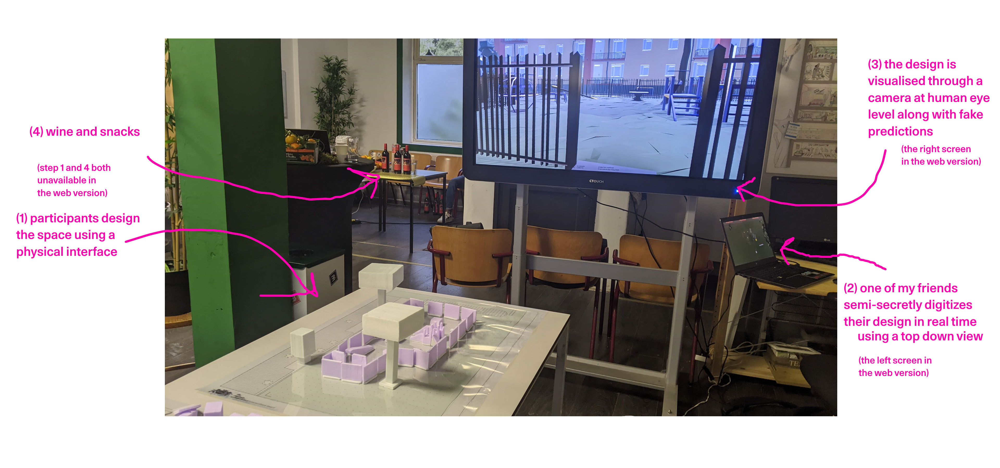

try a version of the prototype adapted for web here (might take a little while to load). instructions below.
developed as part of my master's thesis research. contact me at davidtiemstra@gmail.com if you want to know more!
(if you didn't get here through my thesis, there's some context at the bottom of the page
object keys:
1 - low fence
2 - high fence
3 - small tree
4 - large tree
z - concrete bench
x - normal bench
c - picnic table
v - street light
b - trash bin
n - fire cage
q - low platform
a - high platform
w - low ladder
s - high ladder
e - low climbing wall
d - high climbing wall
r - low monkey bars
f - high money bars
t - low slide
g - high slide
y - low bridge
h - high bridge
j - low to high bridge
i - normal swing
7 - basket swing
8 - roundabout
9 - sphere roundabout
m - spring rocker
k - seesaw
l - pingpong table
-INSTRUCTIONS-
place objects in the control window on the left and view them in 3d along with their future effects in the window to the right:
1. press the key corresponding with the object (see list).
2. hover your mouse over your preferred location in the control window.
3. press space.
you can also select an objects by clicking it in the control window which will let you:
- move the selected object with the arrow keys or by right clicking a point on the control window
- rotate it with the mouse wheel
- remove it with backspace
you can also select, move and rotate the white square with the red dot in the same way as any other object, this controls the camera.
-CONTEXT-
this is a speculative prototype for a "urban digital twin for public participation".
it is a research tool that imagines what a participatory planning session fueled by the
predictive powers of urban digital twins might look like. using it i acted out a
scenario with citizens to, through the enactment and following discussion, uncover
some of the potential risks and benefits of using digital twins for public partication.
the prototype was not designed to be "good" or realistic, but rather to evoke discussion
while still presenting a plausible enough future for participants to take seriously.
it was also, clearly, not designed to be used in a browser but with a physical interface
during in-person sessions. below you can see the prototype in use at a local community center.
